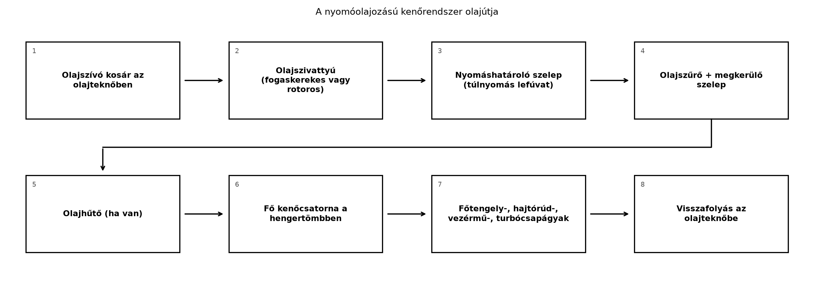

Az ügyfél kétféle panasszal érkezhet: „a műszerfalon kigyulladt az olajnyomás-lámpa”, vagy „a motor kopog, és mintha lassan forogna a lendkerék”. A másik járművön a levegőszűrő annyira eltömődött, hogy a motor füstöl és gyenge, a dízel pedig télen nem indul, mert a tüzelőanyag-szűrőben kivált a paraffin. Ha nem tudod végiggondolni, merre megy az olaj a szivattyútól a csapágyakig, miért nyit a nyomáshatároló, miért van a szűrőn megkerülő szelep, és mi a különbség a nedves- és szárazkarteres kenés között, akkor csak találgatsz – és az olajnyomás-hiány motorfelújítással végződhet. Ez az alfejezet a kenőrendszer feladat → felépítés → működés → jellemző hibák → ellenőrzés/javítás láncát tanítja meg, és hozzáveszi a levegő- és tüzelőanyag-szűrőket is, mert ezek a motor üzemanyag- és levegőellátásának „tüdője” és „veséje”.
Képzeld el a motort melegen, járó motorral. Az olaj az olajteknőből a szívókosáron át egy fogaskerekes szivattyúba jut. A szivattyú nyomást épít, az olaj átpréselődik az olajszűrőn, majd – ha van – az olajhűtőn. A fő kenőcsatornából furatok vezetnek a főtengelycsapágyakhoz, onnan a hajtókarok furatain át a hajtórúd-csapágyakhoz, továbbá a vezérműtengely-csapágyakhoz, a szelepemelőkhöz, a turbófeltöltő csapágyazásához és gyakran a dugattyúhűtő olajfúvókákhoz. A szivattyú és a szűrő után a felesleges mennyiséget a nyomáshatároló szelep engedi vissza. A levegőszűrő a szívócsonk előtt, a tüzelőanyag-szűrő pedig a befecskendezőrendszer előtt ül.

Az ábra a sorrendet mutatja, de a valós motoron az olajnyomás a szűrő előtt és után is mérhető, a szűrőházon gyakran nyomáskapcsoló vagy nyomásjeladó ül. A jármű alatt az olajteknő leeresztőcsavarjánál engeded le az olajat, a szűrő pedig általában a hengertömb oldalán, felülről vagy alulról hozzáférhető.
Definíció. A kenés a súrlódó felületek közötti közvetlen fém–fém érintkezés csökkentése azzal, hogy a felületek közé folyékony vagy szilárd kenőanyagot juttatunk. A motorban a kenőanyag a motorolaj, amely a súrlódást folyadéksúrlódásra csökkenti, ha teljes kenőfilm alakul ki.
Összefüggés. A folyadéksúrlódásos (hidrodinamikus) kenés lényege, hogy a forgó tengelycsap és a csapágy közé az olajék önműködően felépül: a csap húzza be az olajat a szűkülő résbe, és ott az olajnyomás annyira megnő, hogy a fémfelületeket szétválasztja. A hidrodinamikai nyomás nagysága nem a szivattyú által előállított rendszernyomástól függ, hanem a fordulatszámtól, a csapágyhézagtól és az olaj viszkozitásától; a szivattyú csak a szükséges olajmennyiséget szállítja és a hozzáfolyást biztosítja.
Összefüggés. A kenőrendszer nyomása a szivattyú szállításából, a csapágyak és egyéb fogyasztók fojtási ellenállásából, az olaj viszkozitásából és a hőmérsékletből adódik. Hideg olajnál a viszkozitás nagy, ezért a nyomás is magas; a nyomáshatároló szelep ilyenkor lefúvat, és az olajat visszavezeti a szivattyú szívóoldalára vagy az olajteknőbe. Meleg motornál a viszkozitás csökken, ezért az olajnyomás alacsonyabb lesz, de a teljes kenőfilm kialakulásához még elegendőnek kell lennie.
Definíció. A motorolaj viszkozitási
osztálya a hideg- és melegfolyási viselkedést írja le. A
SAE-osztály két számból áll: az első a téli hidegfolyást (pl.
5W), a második a meleg, 100 °C-os viszkozitást jelöli (pl.
30, 40). A W a winter
rövidítése. A tényleges kenési képességet a viszkozitáson túl az
additívek, a hőstabilitás és a motorra vonatkozó gyártói ACEA- vagy
gyári specifikáció határozza meg.
Megjegyzés. A korábbi alfejezetben A motor hűtése már láttuk, hogy az olaj hűtőfunkciót is ellát. Ezt most a kenőrendszerbe integrálva, az olajhűtőnél fejtjük ki.
A frissolaj-kenés (régi lassújárású motorok, egyes állómotorok) az olajat egyszer átvezeti a kenőhelyeken, majd elégeti vagy kivezeti. A mai járműmotoroknál nem alkalmazzuk, csak ipari gépeken fordul elő. A keverékolajozás (egyben kenés és üzemanyag) a kétütemű Otto-motorok hagyományos kenésmódja: az olajat a benzinhez keverik (pl. 1:50), a forgattyús házban kiülepedő köd keni a csapágyakat. A modern, külön olajadagolós kétüteműek ezt adagolószivattyúval oldják meg. A keverékolajozás hátránya a pontatlan adagolás és a nagyobb füstképződés.
A mai négyütemű motorok alapsémája a nyomóolajozás: olajszivattyú szívja a olajat a teknőből, nyomás alatt eljuttatja a kenőhelyekre, majd az olaj visszafolyik a teknőbe. A rendszer részei:
A szárazkarteres kenést sportmotorokon, egyes terepjárókon és nagy dőlésszögű üzemre tervezett motoroknál használják. Az olajteknő nem tárol nagy mennyiségű olajat; egy vagy több szívószivattyú (ún. olajvisszaszívó szivattyú) a teknőből folyamatosan egy külön olajtartályba nyomja az olajat. A nyomószivattyú innen szív, így a rendszer erős oldaldőlésnél vagy nagy hosszgyorsulásnál is mindig olajat kap, és az olajteknő alacsonyra építhető. A motor szellőztetése és az olajleválasztás ebben az esetben még fontosabb.
A motorolaj-szivattyú jellemzően belső fogaskerekes vagy rotoros kivitelű. A külső fogaskerekes szivattyú két egymásba kapcsolódó fogaskerékből áll; az egyik fogaskerék a szivattyútengelyre, a másik a házban szabadon fut. A szívóoldalon a fogak üresedése beszívja az olajat, a nyomóoldalon a fogak egymásba tolódása kinyomja. A belső fogaskerekes (gerotor) szivattyúnál egy belső, külső fogazatú rotor egy külső, belső fogazatú gyűrűben forog; a fogüregek térfogata váltakozik, és így szállít. A szabályozott olajszivattyú (változó szállítású lamellás vagy állítható gerotor) a motorvezérlő parancsára a szállított mennyiséget a tényleges igényhez igazítja, így csökkenti a hajtási teljesítményveszteséget.
Összefüggés. Egy fogaskerekes szivattyú elméleti szállítása közelítőleg a fajlagos geometriai szállítás és a fordulatszám szorzata. Ha a fajlagos szállítás (m³/fordulat), és a szivattyú fordulatszáma (1/s), akkor az elméleti térfogatáram:
A tényleges szállítás ennél a szivárgási veszteség miatt kisebb:
ahol a volumetrikus hatásfok, jellemzően 0,8–0,9 körül, elkopott szivattyúnál kisebb.
A külső fogaskerekes szivattyúban az olaj nem a két kerék között, hanem a fogárkokban, a ház fala mentén jut át a szívóoldalról a nyomóoldalra; a középen egymásba kapcsolódó fogak kiszorítják a nyomóoldalra. A rotoros szivattyúban a belső rotor eggyel kevesebb fogú, mint a külső gyűrű, ezért a cellák térfogata forgás közben a szívónyílásnál nő, a nyomónyílásnál csökken. A fogfej- és az oldalhézag kopása növeli a belső visszaszivárgást, így csökkenti -t. Az interaktív változatban a fordulatszám, a fajlagos szállítás és a volumetrikus hatásfok csúszkával állítható, a szállított olajmennyiség a fenti képlettel azonnal kiszámolódik.
Az olajszűrő a szivattyú nyomóoldalán, a főcsatorna előtt helyezkedik el. A gyártók általában teljes átfolyású (full-flow) szűrőt alkalmaznak, azaz a szivattyú által szállított teljes olajmennyiség áthalad rajta. A szűrőbetét pórusmérete és a szűrőfelület úgy van méretezve, hogy a hidegindításnál fellépő nagy viszkozitású olaj is átjusson rajta; ettől függetlenül párhuzamosan egy megkerülő szelepet építenek be. Ha a szűrő eltömődik vagy a hideg olaj ellenállása túl nagy, a megkerülő szelep kinyit, és szűretlen olaj jut a csapágyakhoz. Ez jobb, mint a kenőolaj hiánya, de rendszeres hideg rövidtávú üzemnél a szűretlen üzem fokozza a kopást.
Az olajhűtő feladata, hogy a nagy hőterhelésű motorokban (turbómotorok, dízelek, sportmotorok) az olajhőmérsékletet a megengedett tartományban tartsa. Két fő kivitel van:
A műszerfali olajnyomás-kapcsoló egy küszöbkapcsoló: amíg a rendszernyomás eléri a kapcsolási nyomást (jellemzően 0,2–0,5 bar – ellenőrizendő: gyártói adat), a kapcsoló zárja vagy nyitja az áramkört, és a műszerfalon kialszik a lámpa. Ha a nyomás a küszöb alá esik, a lámpa kigyullad. A nyomásjeladó folyamatos jelet ad, így a rendszer a pontos értéket is kiírhatja vagy a motorvezérlő felhasználhatja (pl. változó olajszivattyú szabályozásához). Az olajszint-érzékelő a teknőben méri a szintet; lehet egyszerű kapcsoló, hőmérséklet- és szintfüggő ellenállás, vagy ultrahangos/kapacitív jeladó. A szintellenőrzés fontos, mert a nyomáskapcsoló csak a nyomás elvesztését jelzi, a túl alacsony szintből adódó habzást és rossz kenést már nem feltétlenül időben.
A levegőszűrő a szívórendszer első eleme. Feladata, hogy a beszívott levegőből eltávolítsa a port, homokot, virágport és egyéb szilárd szennyeződést, mielőtt az a hengerbe jutna. A szűrőbetét lehet papír (cellulóz, szintetikus), habanyag vagy olajfürdős (régi járműveken). A szűrő eltömődése növeli a szívási ellenállást, csökkenti a töltési fokot, a teljesítményt és növeli a fogyasztást. A modern motoroknál a szívócsőben légtömeg- vagy szívócsőnyomás-érzékelő érzékeli a csökkent légáramot, ezért a motorvezérlő az eltömődött szűrővel is kompenzálhat bizonyos határig, de a papírbetétet a gyártói ciklus szerint cserélni kell.
A tüzelőanyag-szűrő az üzemanyag-rendszerben a szivattyú előtt vagy után, a befecskendezők előtt helyezkedik el. Benzinmotoroknál gyakran a tankban, a tüzelőanyag-modulban van; dízelmotoroknál a nagy nyomású szivattyú és a common rail előtti kisnyomású körben külön álló csavaros vagy patronos szűrő. Feladata a mechanikai szennyeződés és – dízelnél – a víz kiválasztása. A vízleválasztó az alján gyűjti a vizet, amit a gyártói intervallum szerint le kell engedni; a dízelben lévő víz a befecskendezőrendszer károsodását okozza. Télen a dízelszűrőben a paraffinkiválás miatt téli dízel vagy szűrőfűtés szükséges; a hideg szűrő eltömődése indítási nehézséget okoz.
1. Számítás (olajszivattyú szállítása).
Adott: egy fogaskerekes olajszivattyú fajlagos szállítása
,
a szivattyú fordulatszáma
,
a volumetrikus hatásfok
.
Keresett: az elméleti és a tényleges térfogatáram.
Megoldás:
Ellenőrzés. A percenkénti 34 liter valósághű egy közepes személyautó-motor szivattyújára, és az egység is liter/perc. A tényleges érték fordulatszámtól, viszkozitástól és kopástól függ, ezért a mérés a műhelyben nyomásmérővel történik. ∎
2. Számítás (olajnyomás által kifejtett erő).
Adott: egy hidraulikus szelepemelő dugattyúátmérője
,
az olajnyomás
.
Keresett: mekkora erőt fejt ki az olaj a dugattyúra.
Megoldás:
Ellenőrzés. Az eredmény nagyságrendileg helyes: egy ujjnyi átmérőjű dugattyúra 3 bar nyomás kb. 136 N erőt ad. Az ilyen számítást használjuk hidraulikus tömítések, feszítők és szelepemelők méretezésénél. ∎
Ellenőrzőlista olaj- és szűrőrendszer vizsgálatához
Hibakeresési eset.
Tünet: 1,6 literes, közvetlen befecskendezésű, turbós benzinmotorral
szerelt autó műszerfalán kigyullad az olajnyomás-lámpa, és a motor
halkan kopogó hangot ad. A vezető azonnal leállítja, és vontatva hozza a
műhelybe.
Hipotézisek: (1) alacsony olajszint, (2) hibás olajnyomáskapcsoló vagy annak vezetéke, (3) eltömődött olajszívó kosár, (4) kopott olajszivattyú, (5) nyitva ragadt nyomáshatároló szelep, (6) belső csapágykopás.
Mérés/vizsgálat: a nívópálca olajszintet mutat a max jel felett kissé; az olaj híg, erős benzinre emlékeztető szagú. A nyomáskapcsoló csatlakozóján multiméterrel a kapcsoló ellenállása meleg motornál is zárva marad (a lámpa joggal ég). A nyomásmérővel alapjáraton 0,3 bar, 3000 1/min-nél 1,1 bar – a gyártói minimum (ellenőrizendő) alatt. A motorvezérlő hibakódjai között P0520 vagy P0521 olajnyomás-érzékelő/kapcsoló tartományhiba – ellenőrizendő a típus szerint.
Ok: a közvetlen befecskendezés hibás injektor-befecskendezése miatt a hengerfalra jutó benzin az olajteknőbe került, az olajat felhígította, a viszkozitás lecsökkent. Az alacsony viszkozitás miatt a szivattyú nem tudott megfelelő nyomást építeni.
Javítás: injektor-ellenőrzés, a hibás injektor cseréje, olaj- és szűrőcsere, a nyomásmérővel és diagnosztikai műszerrel végzett újbóli ellenőrzés. Az olajcsere után a kopogást újra ellenőrizzük; ha megmarad, vagy az olajnyomás a gyártói minimum alatt marad (ellenőrizendő: gyártói adat), a régi olajszűrő felvágásával (fémforgács, csapágyfém keresése) és az olajteknő bontásával a csapágyakat meg kell vizsgálni. A javítás után hideg- és melegjáratáson is nyomon követni kell az olajszintet és a szagot. ∎
Cél: a motorolaj és az olajszűrő tervezett cseréje, a levegő- és tüzelőanyag-szűrő állapotának ellenőrzése, valamint az olajnyomás ellenőrzése a javítás után.
Jármű- és adatazonosítás: alvázszám, motorszám, a pontos olajspecifikáció (SAE-viszkozitás, ACEA/gyártói jóváhagyás) és a töltetmennyiség a gyártói javítási adatból, a szűrőtípus a járműkatalógusból.
Szükséges szerszámok, mérőeszközök, anyagok: olajleeresztő kulcs vagy bit, szűrőleszedő, nyomatékkulcs, gyűjtőedény, tölcsér, rongy, új olajszűrő, friss motorolaj, levegőszűrő, tüzelőanyag-szűrő (ha cseréljük), olajnyomásmérő, multiméter, lefolyótálca, veszélyes hulladékgyűjtő, egyéni védőeszköz (nitril- vagy vegyszerálló kesztyű, védőszemüveg, zárt munkaruha).
Biztonsági korlát. A feladat tanműhelyi környezetre, oktató felügyeletére és a gyártói javítási utasítás betartására vonatkozik; a megadott értékek tanulási példák. Emelés és alátámasztás: jármű alá csak a gyártói emelési pontokon felemelt és mechanikusan reteszelt műhelyi járműemelőn, vagy bakra támasztva szabad bemenni; csak kocsiemelővel tartott jármű alá bemenni tilos. A forró motorolaj és a kipufogó részek égési sérülést okozhatnak; a klíma csöveit és a kipufogórendszert forrón ne közelítsd meg.
Környezetvédelem. A fáradt olaj, a használt szűrő, az olajos rongy és a kifolyt üzemanyag veszélyes hulladék; külön gyűjtőedénybe, nyilvántartva kell gyűjteni, és csak engedéllyel rendelkező átvevőnek átadni. Hűtőfolyadékot, olajat vagy üzemanyagot csatornába, talajba juttatni tilos.
Munkalépések:
A képsor a munkalépések sorrendjét és a három leggyakoribb szerelési hibát mutatja: a szűrőházon maradt régi gumitömítést (kettős tömítés), az újra felhasznált leeresztőcsavar-tömítést és a MAX jel fölé töltött olajat.
Tipikus hibák a munkavégzés során: túltöltés, a szűrő tömítésének beragadása a szűrőházba (kettős tömítés), a leeresztőcsavar túlhúzása, nem megfelelő olaj használata, a csere után nem ellenőrzött nyomás, a szűrő kinyitása a megkerülő szelep megfigyelése nélkül.
1. feladat (A). Sorold fel a nyomóolajozású kenőrendszer fő elemeit, és jelöld, hogy az olaj merre halad.
2. feladat (A). Számítsd át a 0,8 bar értéket kPa-ra és MPa-ra, és állapítsd meg, hogy alapjárati olajnyomásként ez magas vagy alacsony.
3. feladat (B). Egy hidraulikus szelepemelő dugattyúátmérője 18 mm, az olajnyomás 2,5 bar. Számítsd ki a dugattyúra ható erőt. Mennyivel változik az erő, ha a nyomás 1,5 bar-ra csökken?
4. feladat (B). Fogaskerekes szivattyú elméleti szállítása 0,8 l/s 5000 1/min fordulatszámnál. Mekkora a fajlagos szállítás cm³/fordulatban? (Feltételezzük, hogy a volumetrikus hatásfok nem szerepel, az elméleti szállítást használjuk.)
5. feladat (C). Műszerfalon olajnyomás-lámpa csak hideg motornál ég, melegen kialszik. Adj lehetséges okokat és magyarázd meg, miért hőmérsékletfüggő a jelenség. Milyen méréssel dönthető el, hogy a kapcsoló hibás vagy a nyomás valóban alacsony?
6. feladat (D). Az ügyfél dízel autója télen nehezen indul, majd a motor bemelegedése után a teljesítmény visszatér, de a szűrő mellett a csatlakozóból gázolajszivárgás látható. Milyen tünet–hipotézis–mérés–ok–javítás láncot javasolsz?
Önellenőrzés – válaszok
Feladatok megoldásai
1. feladat
Az olaj útja: olajteknő → olajszívó kosár → olajszivattyú →
nyomáshatároló szelep (túlnyomás esetén visszafúvat) → olajszűrő (ha
eltömődött, megkerülő szelep nyit) → olajhűtő (ha van) → fő kenőcsatorna
→ főtengelycsapágyak, hajtórúd-csapágyak, vezérmű, turbófeltöltő,
dugattyúhűtő fúvókák → visszafolyás a teknőbe.
2. feladat
;
(mert
).
Meleg motoron alapjáraton ez jellemzően alacsonynak számít, de még lehet
a gyártói minimum értékén belül; a pontos határértéket a gyártói adat
adja meg.
3. feladat
(az átmérőt kell a
képletbe írni, nem a sugarat).
,
így
.
,
így
.
A változás
(40 %-kal kisebb erő, a nyomással arányosan).
4. feladat
Az elméleti szállítás:
,
.
A fajlagos szállítás:
.
Ellenőrzés:
szorozva 83,33 1/s-sel
,
tehát helyes.
5. feladat
Hidegen az olaj viszkózusabb, ezért egy ép rendszerben a nyomás hidegen
magasabb, melegen alacsonyabb. Ha a lámpa éppen hidegen ég és melegen
kialszik, a jelenség nem a kopott csapágyak tipikus képe (az melegen,
alapjáraton jelentkezne). Lehetséges okok: (a) a nyomáskapcsoló hibás
vagy a csatlakozója, vezetéke testzárlatos, és a hőmérséklet-változás
miatt a kontaktus változik; (b) a kapcsoló mérőfuratát hideg, sűrű olaj,
lerakódás vagy iszap részben eltömi, így a kapcsoló nem érzékeli a
tényleges nyomást; (c) hideg, sűrű olajnál az olajszívó szűrő vagy a
nyomáshatároló szelep akadozik (beragad nyitva), ezért a nyomás valóban
alacsony, a melegedéssel az olaj hígul és a hiba megszűnik; (d) a
szükségesnél nagyobb viszkozitású, nem a gyártói előírásnak megfelelő
olaj. Döntő mérés: cseréld ki a kapcsolót, vagy szerelj fel kalibrált
nyomásmérőt a kapcsoló helyére; hasonlítsd össze a hideg- és
melegmotornál mért értékeket a gyártói küszöbértékkel.
6. feladat
Tünet: hidegindítási nehézség, majd melegben javulás, látható szivárgás
a szűrő csatlakozójánál.
Hipotézisek: eltömődött dízelszűrő, a szűrő körüli tömítés hibás
szivárgása, a csatlakozó repedése vagy laza szorítása, paraffinkiválás a
szűrőben, esetleg a szűrőház fűtése hibás.
Mérés/vizsgálat: a szűrő előtti és utáni kisnyomású tüzelőanyag-nyomás
ellenőrzése; a szivárgás rögzítése, a csatlakozó nyomatékának és
tömítésének ellenőrzése; a szűrő leengedése (ha van vízleeresztő), a
kifolyó anyag megfigyelése; a szűrőcsere után a rendszer
légtelenítése.
Ok: a szűrő részben eltömődött a hidegben kivált paraffintól; a
szivárgás a csatlakozó tömítésének elöregedéséből vagy laza szerelésből
adódik.
Javítás: szűrőcsere a gyártói előírás szerint, téli dízel használata, a
fűtés ellenőrzése, a tömítés és csatlakozó cseréje, a rendszer
légtelenítése és próbaindítás hideg motornál.
Ellenőrzés: hidegindítás több ciklusban, nyomásmérés a kisnyomású
körben, szivárgásmentesség, diagnosztikai műszerrel az
üzemanyagnyomás-értékek és hibakódok ellenőrzése.
Tanulság: a szűrőt nem csak kilométerre, hanem üzemanyag-minőségre és
évszakra tekintettel is cserélni kell; a szivárgás baleset- és
tűzveszélyes.
A motor kenésének célja a súrlódó felületek szétválasztása, a kopás csökkentése, a hő elvezetése és a szennyeződések elszállítása. A négyütemű motorok alaprendszere a szivattyús nyomóolajozás: az olajszivattyú (fogaskerekes, rotoros vagy szabályozott) az olajat a teknőből a szűrőn, adott esetben az olajhűtőn át a főcsatornába nyomja. A nyomáshatároló szelep a túlnyomást, a szűrő megkerülő szelepe a szűrő eltömődésekor a kenés fenntartását szolgálja. A szárazkarteres rendszer külön tartályból, több szivattyúval biztosítja a kenést extrém dőlésszögnél is. Az olajnyomást kapcsolóként vagy jeladóként figyelemmel kísérjük; a túl alacsony nyomás csapágykárosodást okoz. A levegőszűrő védi a hengereket a por és homok okozta kopástól, a tüzelőanyag-szűrő – különösen dízelnél – a befecskendezőrendszert védi a szennyeződéstől és a víztől. A gyakorlati munka során a gyártói olajspecifikáció, a nyomatékok, a szint- és nyomásértékek, valamint a veszélyes hulladékok elkülönített kezelése mindig kötelező.
Továbbvitt eredmény. A kenőrendszer felépítése, az olajszivattyú típusai, a szűrő és a nyomáshatároló szerepe, az olajnyomás mérése és a tipikus hibák – ezt használjuk a(z) A kenő-, hűtő- és tüzelőanyag-rendszer javítása alfejezetben, ahol a tényleges szétszerelést, ellenőrzést és javítást végezzük.
Az értékek tanulási példák (ellenőrizendő: gyártói adat / hatályos előírás).